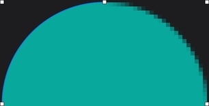

Pixelmator Pro includes customizable smart shapes, a large collection of pre-designed shapes, and support for vector formats like PSD, SVG, PDF, and Illustrator files.
Resolution Independent
Vector shapes are resolution-independent, so curves always look smooth and edges always stay sharp, no matter how much you resize each shape or even entire vector designs.

Vector Support
Pixelmator Pro supports vector file formats, including PSD, SVG, PDF, Adobe Illustrator, and Illustrator EPS, so you can effortlessly edit shapes and paths in these files, and export them while keeping all their vector data.

Smart Shapes
With a collection of pre-made Smart Shapes, you can quickly add star and various polygon shapes, arrows, speech bubbles, and other shapes to your compositions, then customize them in any way you want.
Edit the colors in your photos in any way you want.
In Pixelmator Pro, you’ll find everything from essential color adjustments like brightness, contrast, and exposure to advanced tools like multi-channel curves and wheel-based color balance.
Enhance photos automagically.
Many of the most important adjustments can be applied automatically, using a machine learning algorithm trained on 20 million photos.
Perfect every detail.
Magically remove unwanted objects, clone parts of your photos, lighten or darken precise areas, and do much more. All by using simple brushstrokes to retouch just the areas you want. So all your shots look picture-perfect.
Effortless RAW editing.
Pixelmator Pro supports RAW photos from over 750 of the most popular digital cameras. What’s more, you can add RAW photos as RAW layers and edit directly without having to convert or preprocess them.
View supported RAW formats
Make advanced color edits using color adjustments layers.
Use color adjustments layers to combine different color adjustments, selectively edit photos with incredible precision, and change the look entire layered compositions with ease.